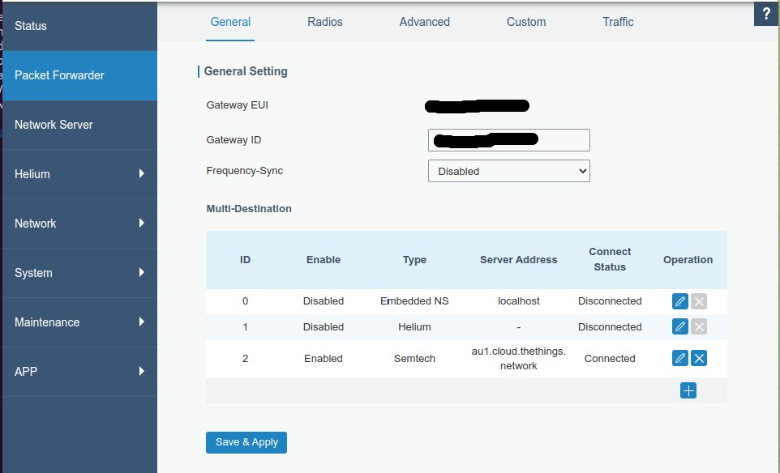

Milesight LoRaWAN Gateways
Milesight manufactures a series of standard LoRaWAN and two models of Helium gateways (with 32GB MMC storage).
There is separate firmware releases for Helium based units - do not use standard firmware on Helium gateways and vice versa.
For the purposes of this documentation we will only deal with UG65 and UG65H versions. All other gateways are the same in firmware and UI.
Standard LoRaWAN
All Milesight 915MHz gateway variants support AU915 (all sub-bands).
Milesight gateway variants
- UG56 - Industrial Gateway (DIN-rail mount)
- UG63 - Mini gateway for indoor and testing applications
- UG65 - Semi-industrial (IP65) for indoor and protected areas
- UG67 - Outdoor (IP67) gateway
Helium Gateways
Unlike the standard LoRaWAN gateways above SSH access (prior to Firmware 61.0.0.37) requires you to contact Milesight support with your Serial number.
Milesight Helium gateway variants
- UG65H - Semi-industrial (IP65) for indoor and protected areas
- UG67H - Outdoor (IP67) gateway
Re-purposing Helium gateways on other LoRaWAN networks
Unlike a lot of other Helium manufacturers Milesight gateways can be easily changed via the normal Web Admin UI or remote managment. Just disable the Helium forwarder and add another forwarder.
